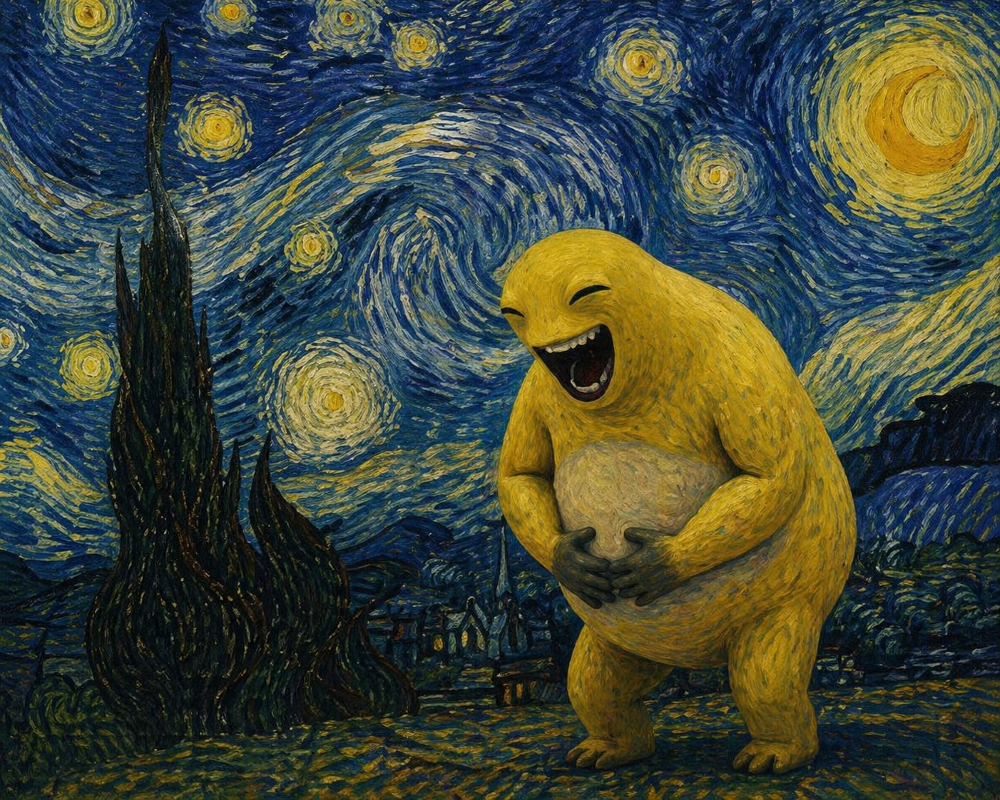
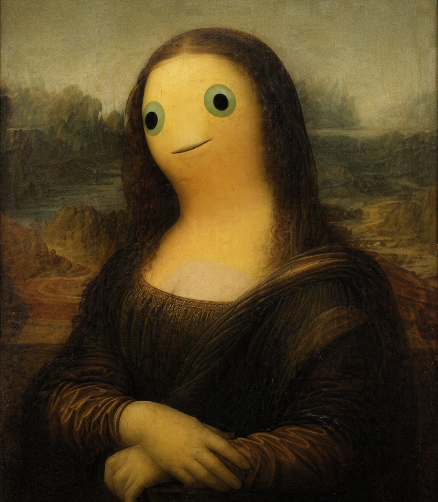
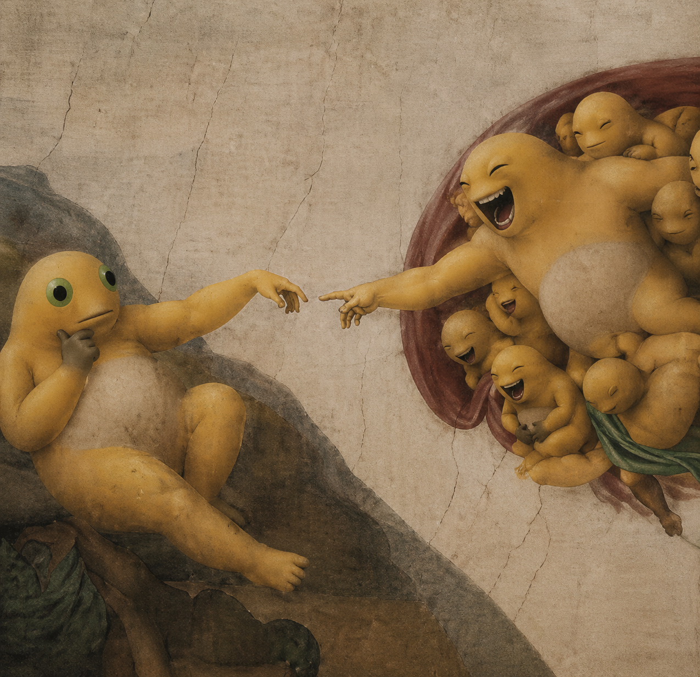
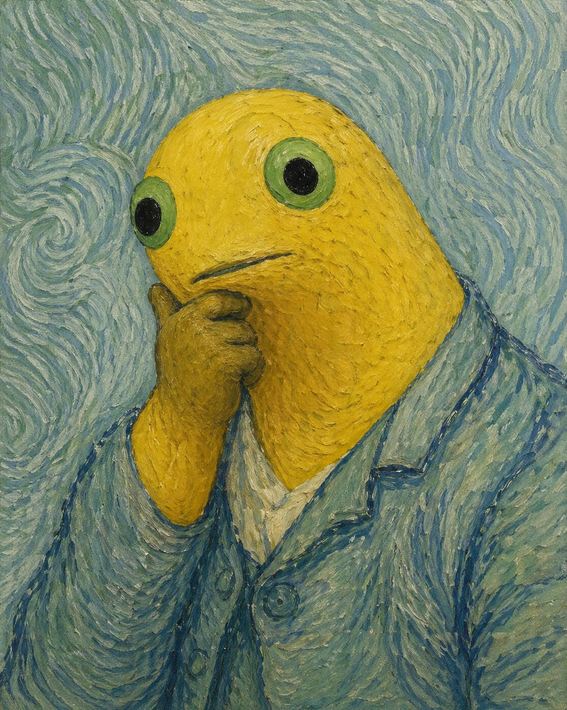

No. 01 / Blue Gold
星夜里的大笑。
深蓝旋涡与金色笔触把奶龙推到画面中央，情绪像光一样扩散。画面保留名画的浓烈，也把庄重转成轻快。

No. 01 / Blue Gold
深蓝旋涡与金色笔触把奶龙推到画面中央，情绪像光一样扩散。画面保留名画的浓烈，也把庄重转成轻快。
No. 02 / Silent Smile
古典肖像的安静秩序遇到圆润的奶龙形态，熟悉的凝视被轻轻偏转，油画质地依旧温厚。

No. 03 / The Touch
天顶画式的宏大构图被调成轻喜剧。人物关系依旧清楚，留白、手势与群像让画面更适合横向大屏展示。

The Collection
四张图以不同画面比例和色彩气质组织成一组，既能单张观看，也能作为统一系列展示。
蓝金旋涡，笑声定格。
古典安静，表情出走。
严肃构图，快乐满屏。

冷色笔触，认真思考。
Detail View
近看能看到油彩般的厚度、布面裂纹和笔触方向。熟悉的名画气质与奶龙的表情一起停在画面里。